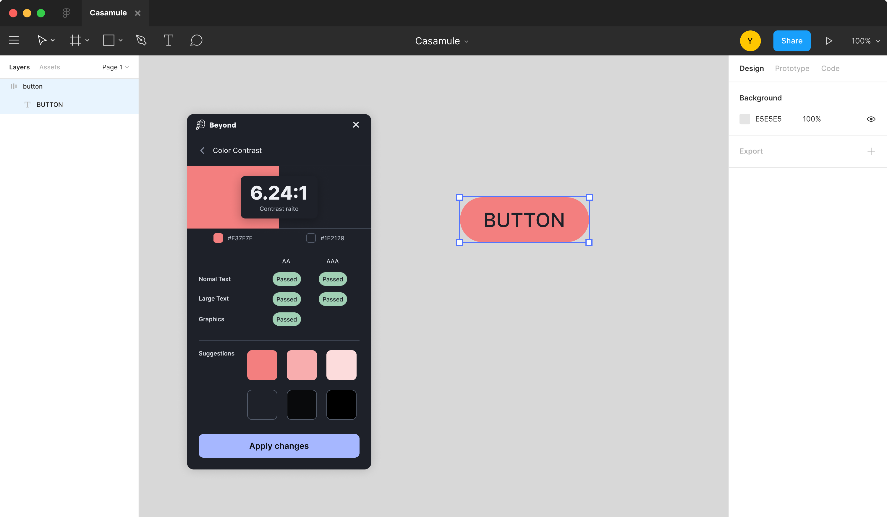
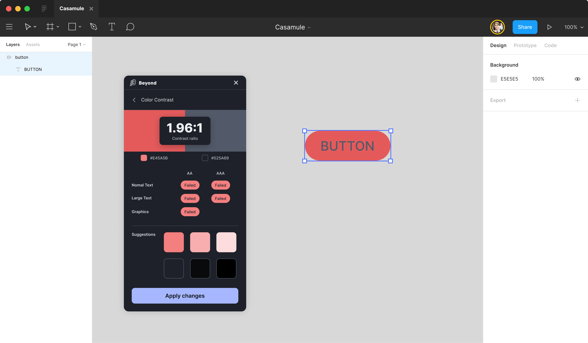

Problem
About 285 million people worldwide live with low vision (World Health Organization). When body text falls below a 4.5:1 contrast ratio against its background, or non-text UI like focus indicators, icons, and meaningful borders falls below 3:1, those users cannot reliably perceive the interface.
The 2024 WebAIM Million audit found that low contrast affected the majority of the most-trafficked websites. Brand palettes routinely fail the threshold without anyone noticing during design.
Pattern
Audit every color pair in context, not in isolation. The same blue may pass for a heading and fail for body text; the same gray may pass on white and fail on a dark-mode surface.
- Body text on background: ≥ 4.5:1
- Large text (≥18pt regular OR ≥14pt bold): ≥ 3:1
- Non-text UI (focus rings, icons that convey meaning, form-field borders, button outlines): ≥ 3:1
- Decorative elements (logos, disabled states, decorative borders): no minimum, but state communication needs another non-color cue
Resolve failures by adjusting one of the two colors in the failing pair, preferring an existing token in the design-system palette before introducing a net-new color. Disabled states are exempt from the contrast minimum, but if disabled appearance is the only signal that a control is unavailable, it must be disambiguated by another cue (icon, label, position).
Visual examples
#FF7A7A
#1351A6
Both buttons are otherwise identical: same text, same shape, same padding. Only the background color changes. The first pair would not be perceivable to many users with low vision; the second is comfortably above the AAA threshold for body text.


Code
Express contrast as part of the design-token layer, not as a one-off color value. That makes the audit re-runnable when the palette changes.
<!-- HTML -->
<button class="btn btn--primary">Submit</button>/* CSS */
:root {
/* Brand-primary token, contrast-verified against --color-surface */
--color-primary-700: #1351A6; /* 7.6:1 on #FFFFFF, passes AAA */
--color-on-primary: #FFFFFF;
--color-surface: #FFFFFF;
}
.btn {
font: 1rem/1.4 "Public Sans", system-ui, sans-serif;
padding: 0.625rem 1.25rem;
border: 0;
border-radius: 4px;
cursor: pointer;
}
.btn--primary {
background: var(--color-primary-700);
color: var(--color-on-primary);
}
.btn--primary:focus-visible {
/* 3:1 minimum against the page surface for non-text indicators */
outline: 2px solid var(--color-primary-700);
outline-offset: 2px;
}Annotation
On a design file, annotate any failing pair with both the measured ratio and the corrected token, in this format:
Contrast: 2.5:1 ✗ → 7.6:1 ✓
Token: --color-primary-700 (#1351A6) on --color-surfaceThis gives the engineer two pieces of information for free: the failure they are inheriting from the design (so they can verify against the same WebAIM checker) and the canonical token to wire up. Avoid annotating raw hex values without the token name. Values drift, tokens stabilize.
WCAG mapping
- 1.4.3 Contrast (Minimum) (opens in new tab) AA 4.5:1 body text, 3:1 large text
- 1.4.6 Contrast (Enhanced) (opens in new tab) AAA 7:1 body text, 4.5:1 large text
- 1.4.11 Non-text Contrast (opens in new tab) AA 3:1 for UI components and graphical objects
Related patterns
- Inclusive imagery (#04), image content that doesn’t depend on color alone to communicate state
- Accessibility-mode validation walkthrough (#09), verifies contrast survives in keyboard + screen-reader context
Further reading
- WebAIM Contrast Checker (opens in new tab), the canonical authoring tool; bookmark it
- MDN: Color contrast (opens in new tab), deep reference with edge cases
- The A11y Project: What is color contrast? (opens in new tab), field-level introduction
- WebAIM Million (opens in new tab), annual audit of the top 1M homepages; useful for grounding the problem at scale